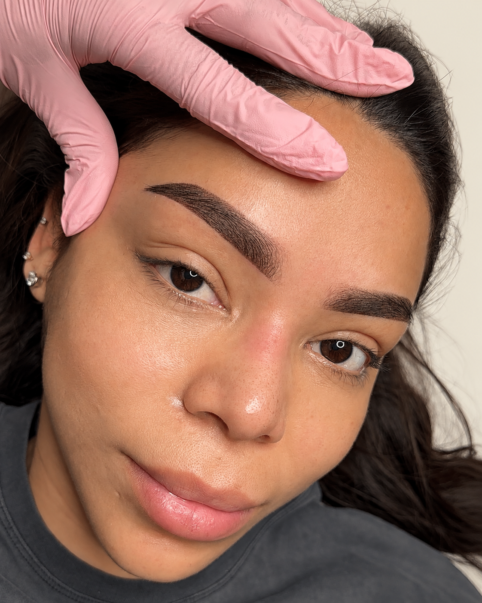
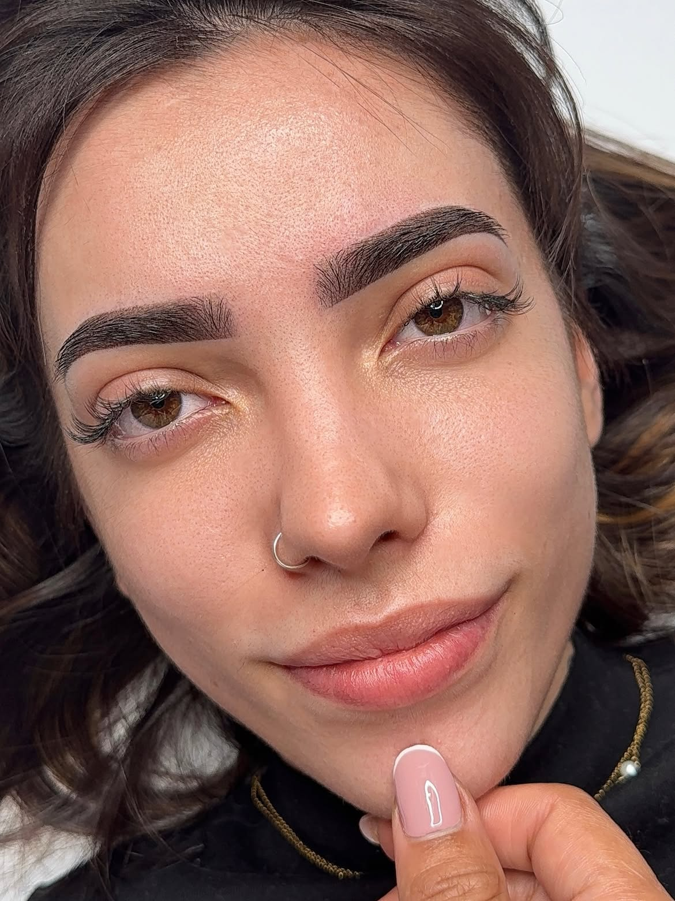
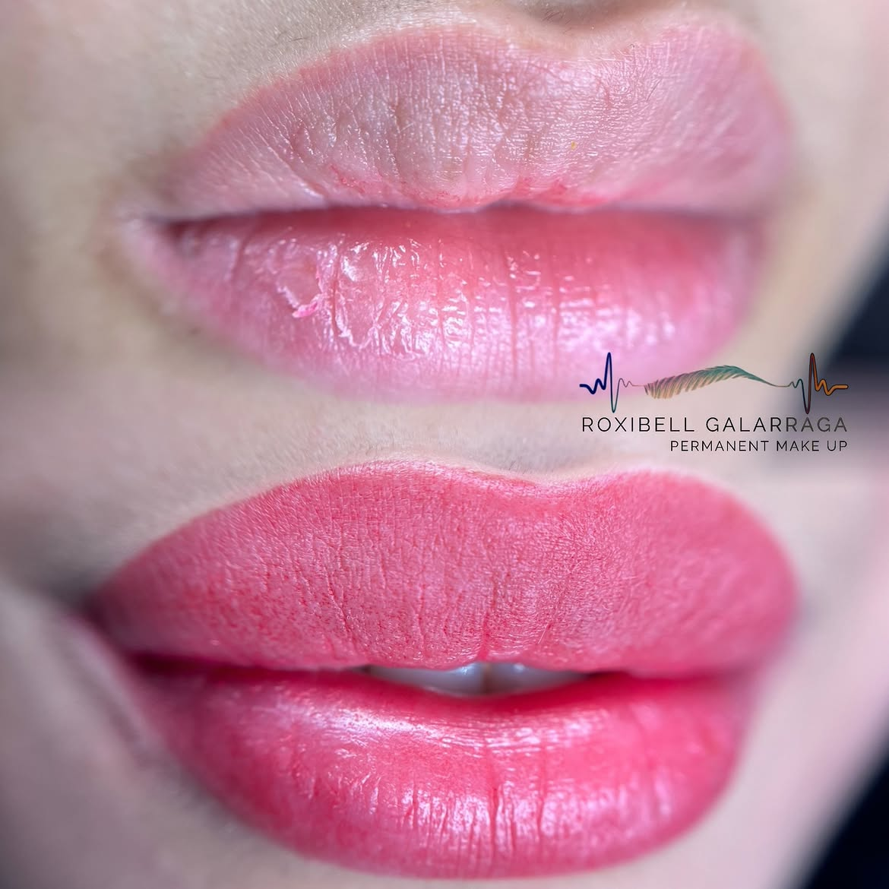
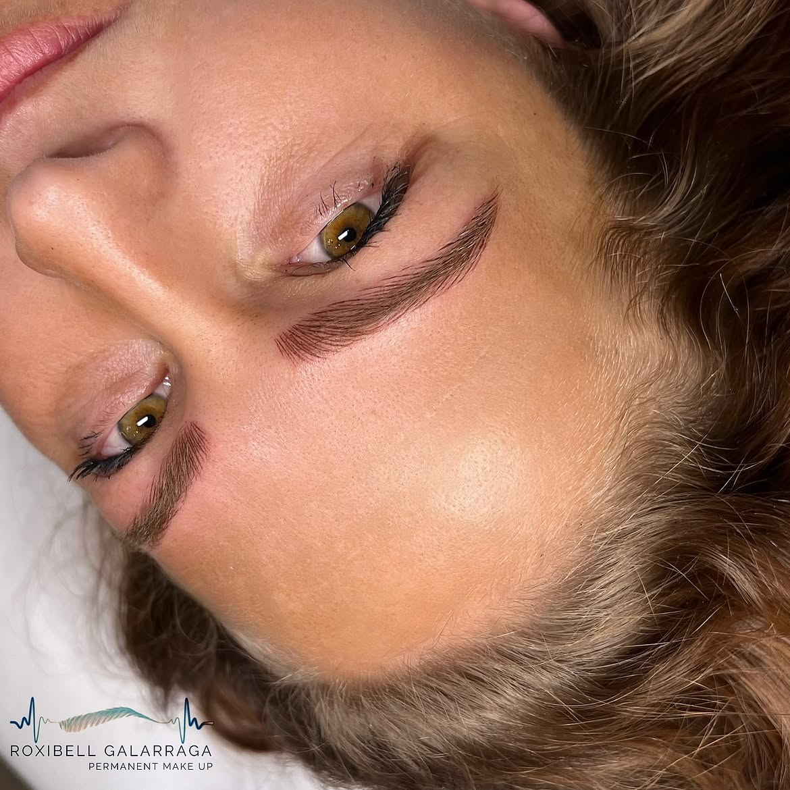
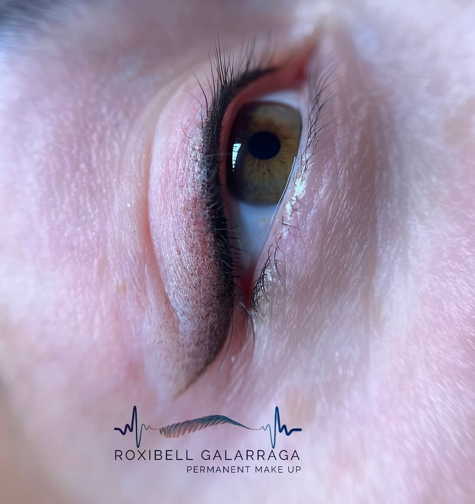

Cejas
Diseño a mano alzada con técnica de pelo a pelo o sombreado en polvo, para unas cejas con volumen y forma natural.
Desde 180 €
Mijas, Málaga
Micropigmentación hiperrealista de cejas, mirada y labios, con Roxibell Galarraga.
+10.000 seguidoras en Instagram.

Arrastra la foto para ver el resultado en cejas.

 Antes
Después
Antes
Después
Cada diseño se adapta a la forma de tu rostro, tu tono de piel y lo que buscas transmitir.
Diseño a mano alzada con técnica de pelo a pelo o sombreado en polvo, para unas cejas con volumen y forma natural.
Desde 180 €
Delineado de pestañas o eyeliner micropigmentado que realza la mirada, con un acabado discreto y duradero.
Desde 150 €
Lip blush para devolver color y definición al contorno de los labios, con un efecto natural de "labios ya maquillados".
Desde 220 €
Los precios son orientativos y pueden variar según el diseño y la técnica. La sesión de retoque no está incluida.
Resultados reales de sesiones de cejas.





Soy Roxibell Galarraga, artista de micropigmentación en Mijas. Me dedico a la técnica de cejas, ojos y labios, cuidando cada detalle del diseño para lograr un resultado hiperrealista y adaptado a cada rostro.
Trabajo con material de un solo uso y protocolos de higiene estrictos en cada sesión, en un estudio pensado para que te sientas cómoda durante todo el proceso.
Edificio Mijas Paraíso
Av. de Méjico 6, Local 10
29650 Mijas, Málaga
Antes y durante la sesión se aplica anestésico tópico en la zona. La mayoría de clientas describe una molestia leve, más parecida a un cosquilleo que a un dolor intenso.
Es un tratamiento semipermanente. Según el tipo de piel y los cuidados posteriores, el resultado suele mantenerse entre 1 y 3 años antes de necesitar un retoque.
La piel superficial cicatriza en unos 7 a 10 días, aunque el color definitivo se estabiliza a lo largo de las siguientes semanas, cuando termina la regeneración interna.
Sí. Se recomienda una sesión de retoque entre 4 y 6 semanas después de la primera, para perfeccionar la forma y asentar el color.
Evita el sol y los tratamientos exfoliantes en la zona durante las dos semanas previas, y el alcohol, el café y los antiinflamatorios (como el ibuprofeno) el mismo día de la cita, salvo indicación médica.
Cuéntame qué zona te interesa y te ayudo a decidir el diseño y la técnica.
Escribir por WhatsApp